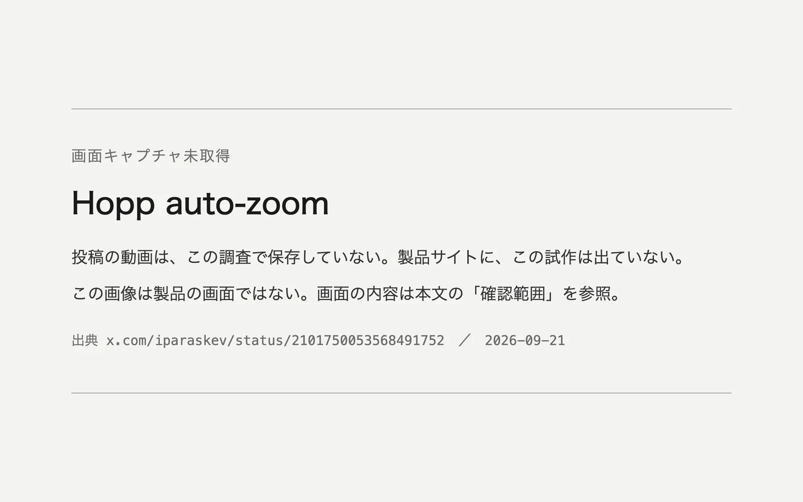

このUIがしていること
判断が変えるのは、見る側の表示の枠だけである。共有している側のアプリやウィンドウは、動かしも書き換えもしない。横長の画面をそのまま共有すると文字が小さくなる問題に、表示の側で応じている。
- 共有する人は、ふだん通りにアプリを使う。どこを見せるかを、その都度指定しなくてよい。
- 寄りと引きの両方がある。1つのアプリに集中しているときは寄り、2つを行き来しているときは引く、という切り替えが動画に出ている。
- 寄る先が違ったとき、見る側や共有する側がどう直すかは、動画からは分からない。通常の画面共有の操作の範囲を超える上書きの手段は、確認されていない。
- 枠が頻繁に動くと見る側が疲れる可能性があるが、切り替えの頻度を抑える工夫があるかどうかは分からない。
キャプチャ
{kind=link}

（原寸の画像を開く）見る箇所掲載した画像は「画面キャプチャ未取得」の告知で、製品の画面ではない。動画で見る箇所は、ブラウザとエディタを並べた広い表示から、エディタへの寄り、2つのウィンドウを収める引き、ブラウザへの寄りへと切り替わる流れ
入力から画面の変化まで
-
判断への入力
作者の説明では、アプリの名前と、ウィンドウの位置や大きさ。画面の中身を渡しているかどうかは分からない。
-
Jevの判断
作者の説明では、ズームの距離をJevが選ぶ。候補の段階、確率は動画に出ていない。
-
結果がUIをどう変えるか
監査の記録では、1つの横長の共有画面が、広い表示からコードエディタへ寄り、2つのウィンドウを収める表示に戻り、次にブラウザへ寄る。共有している側のアプリは動かず、見る側の枠だけが変わる。
- 判断型の見立て
- 不明出典から判断できない
- 作者はズームの距離をJevが選ぶと述べるが、段階から選ぶのか値として尋ねるのかは、投稿からも動画からも分からない。
Jevとの適合
アプリ名とウィンドウの配置という小さな状態から、限られたズームの段階を選ぶ判断は、Jevの低遅延と低コストに合う。作者は、1時間の共有でのコストの見積もりを投稿で述べているが、こちらでは確かめていない。
確認範囲と未確認事項
作者による投稿動画が根拠で、内容は調査監査（2026-09-21）の確認記録による。動画はこのサイトでは保存しておらず、画面は掲載していない。試作は公開されておらず、Hoppの製品サイトにも出ていない。動画にJevの判断を示すパネルはなく、ズームの距離をJevが選ぶというのは作者の説明である。Jevの出力、確からしさ、手動で上書きする手段は確かめられていない。
- 確認済み調査監査（2026-09-21）が動画で確認した範囲。1つの横長の共有画面が、広い表示、エディタへの寄り、2つのウィンドウの引き、ブラウザへの寄りへと切り替わる様子。このサイトの作業では動画を再確認していない
- 未検証Jevへの入力と出力、ズームの候補、確からしさ、手動での上書き、切り替えの頻度の制御、コストの見積もり、試作の公開の有無
- 推定扱い質問型は不明として扱う。ズームの距離を段階から選ぶのか、連続した値として尋ねるのかは、投稿と動画から分からない
- 引用投稿の動画と画面は掲載していない。掲載した画像はこのサイトで作成した告知で、製品の画面ではない